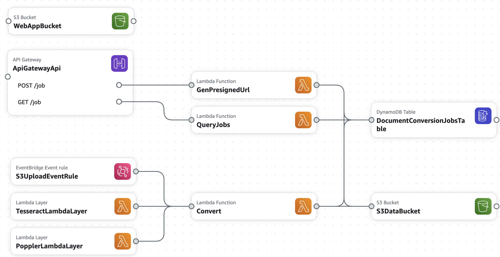

About this project
This is an open source, serverless version of an Optical Character Recognition (OCR) service I built at my previous job at State Street, built on AWS. The previous document conversion service, as the name implies, converted many types of input documents (image files, pdfs, etc) into a structured XML format. The service was the first step in various machine learning/natural language processing (NLP) pipelines. It was effectively "OCR on steroids", somewhat comparable to AWS Textract.
The State Street version contained an API tier, a worker tier, and a database tier. For this serverless implementation, I've replicated the previous service with 3 Lambda functions, a DynamoDB table, API Gateway endpoints, and S3 for storage. See the SAM template file for details.
Project Architecture
Workflow
- Select Input: The user selects a local file or selects an existing file.
- Start Job: The frontend makes a request to the StartJob Lambda function.
- For a local file upload, the client uploads the local file to the S3 bucket via the presigned URL.
- For an existing file, the backend downloads the source and uploads the file to the S3 bucket.
- Trigger Lambda: Once the file is uploaded, an S3 event (via EventBridge) triggers the Convert Lambda function.
- Document Conversion:
- Retrieve Results: The frontend periodically checks the status of the job, and once completed, the converted document links are provided to the user for download.